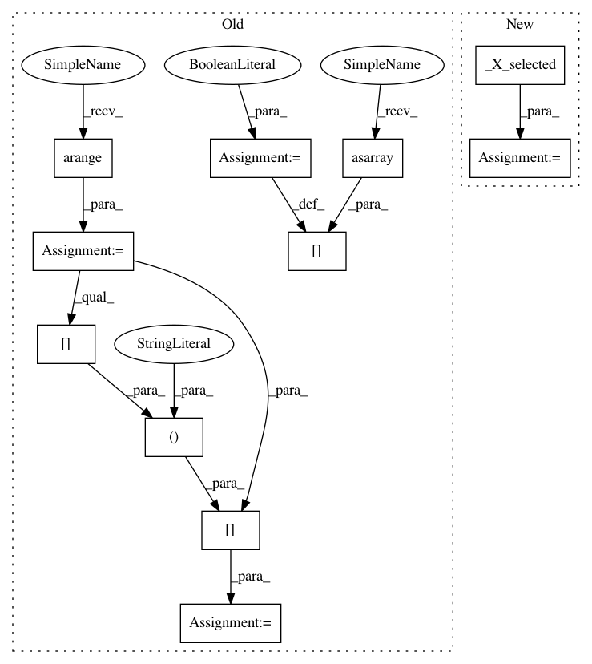

812322ed8d42e550fda41d8df54d62deb13a1aca,tpot/builtins/one_hot_encoder.py,,_transform_selected,#Any#Any#Any#Any#,78
Before Change
X = check_array(X, accept_sparse="csc", force_all_finite=False)
n_features = X.shape[1]
ind = np.arange(n_features)
sel = np.zeros(n_features, dtype=bool)
sel[np.asarray(selected)] = True
not_sel = np.logical_not(sel)
n_selected = np.sum(sel)
if n_selected == 0:
// No features selected.
return X
elif n_selected == n_features:
// All features selected.
return transform(X)
else:
X_sel = transform(X[:, ind[sel]])
X_not_sel = X[:, ind[not_sel]]
if sparse.issparse(X_sel) or sparse.issparse(X_not_sel):
return sparse.hstack((X_sel, X_not_sel), format="csr")
else:
After Change
X = check_array(X, accept_sparse="csc", force_all_finite=False)
X_sel, X_not_sel, n_selected, n_features = _X_selected(X, selected)
if n_selected == 0:
// No features selected.
return X
In pattern: SUPERPATTERN
Frequency: 3
Non-data size: 11
Instances
Project Name: EpistasisLab/tpot
Commit Name: 812322ed8d42e550fda41d8df54d62deb13a1aca
Time: 2017-09-06
Author: weixuanf@upenn.edu
File Name: tpot/builtins/one_hot_encoder.py
Class Name:
Method Name: _transform_selected
Project Name: EpistasisLab/tpot
Commit Name: 812322ed8d42e550fda41d8df54d62deb13a1aca
Time: 2017-09-06
Author: weixuanf@upenn.edu
File Name: tpot/builtins/feature_transformers.py
Class Name: CategoricalSelector
Method Name: transform
Project Name: EpistasisLab/tpot
Commit Name: 812322ed8d42e550fda41d8df54d62deb13a1aca
Time: 2017-09-06
Author: weixuanf@upenn.edu
File Name: tpot/builtins/feature_transformers.py
Class Name: ContinuousSelector
Method Name: transform